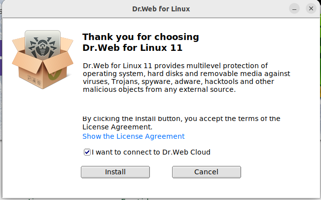

1ª Descargamos el programa
desde su página oficial
2ª Ejecutamos el instalador
con el comando sh

3ª Se abrirá el instalador
y seleccionaremos Install
para comenzar con la instalación
4ª Dentro del programa encontraremos
varias opciones, para comenzar un escaneo
seleccionaremos scanner
5ª Empezará el escaneo
del disco que hayamos seleccionado